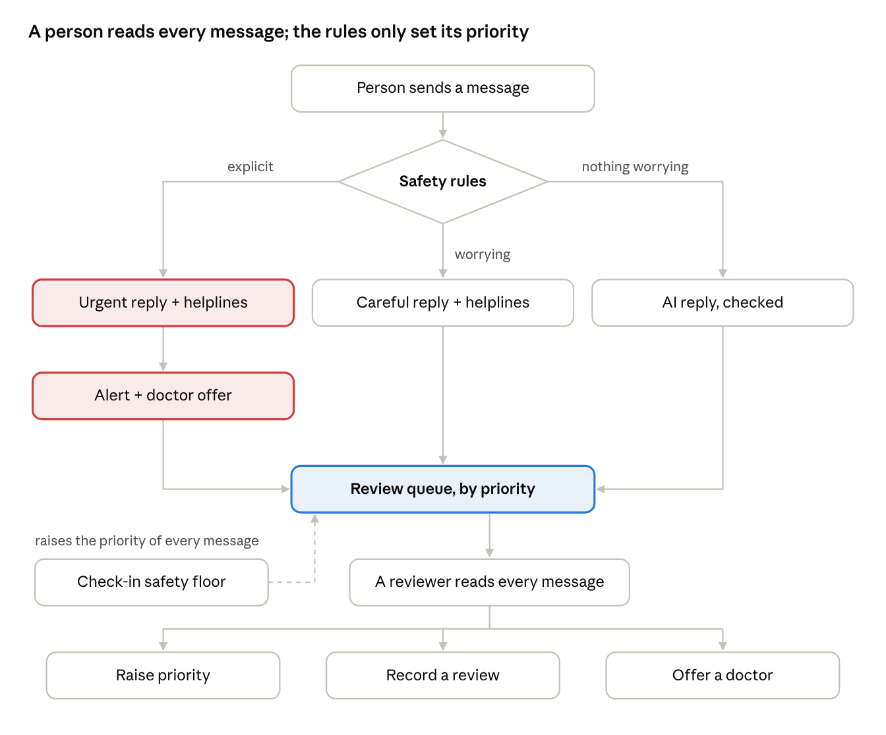
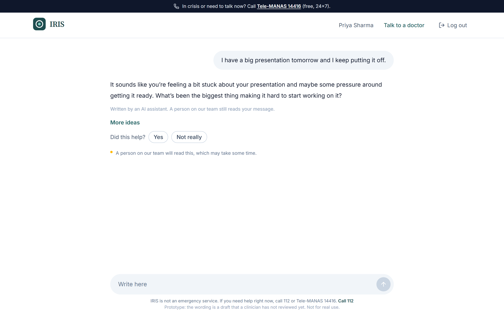
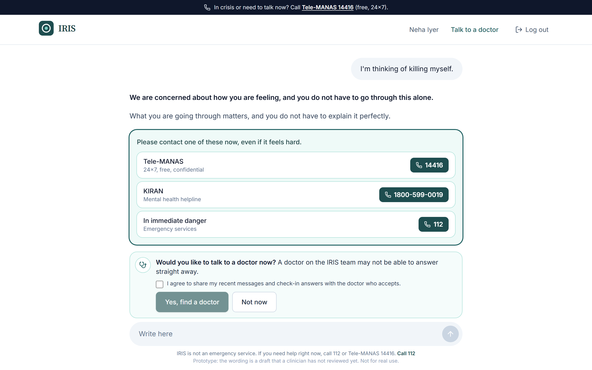
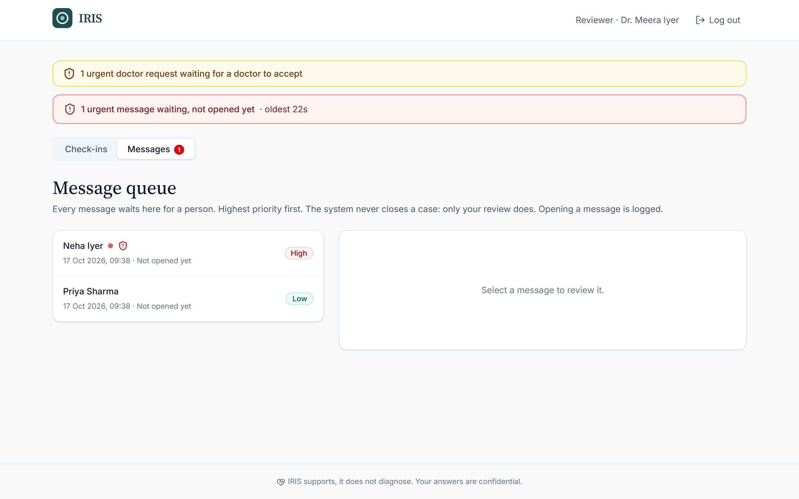
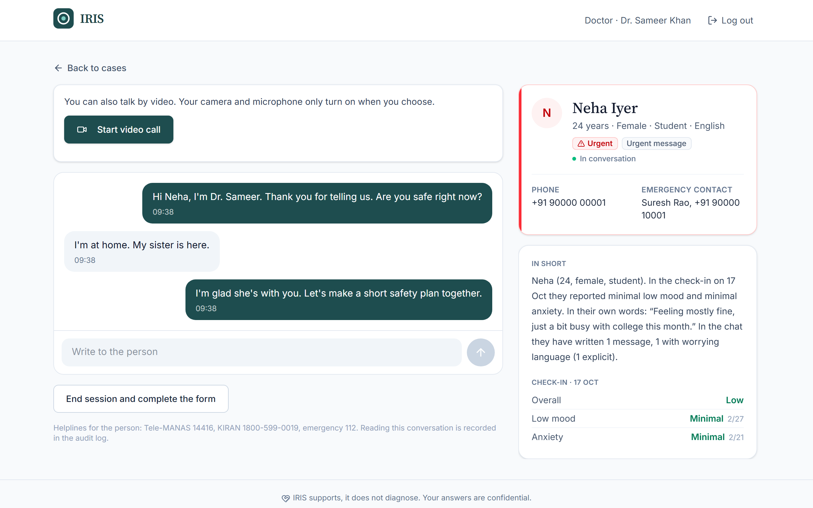

1Abstract
IRIS is a web platform where a student can check in, chat, and ask to talk to a doctor. Explainable safety rules and a check-in safety floor (PHQ-9, GAD-7 and C-SSRS questions) set each message's priority and show helplines at once when a message is worrying. A trained person reads every message; no machine-learning model decides on its own. With the student's consent, a doctor can chat or video-call them.
2Problem statement
- Students often do not reach out; distress in everyday text is easy to miss.
- Automated risk scores are not reliable enough to clear a case alone.
- Chatbots can give unsafe replies or false promises ("help is on the way").
- Counsellors need priorities and context, not a flood of unsorted messages.
3Objectives
- A simple, private chat with supportive replies and practical steps.
- Detect worrying and urgent language with explainable rules; show helplines immediately.
- Put every message in front of a reviewer, sorted by priority.
- Let a student talk to a doctor by chat or video, with consent first.
- Measure honestly whether ML ranking helps, with no clinical-accuracy claim.
4Proposed methodology
- Check-in at sign-up sets a safety floor for all later messages.
- Rule layer sorts each message: explicit, worrying, or nothing worrying.
- Stepped care: ordinary messages get an AI-assisted reply and tips; "Did this help? Not really" offers a doctor.
- Doctor request: offered on an urgent message, a high check-in, a reviewer's suggestion, or when tips did not help. Before accepting, the doctor sees only age, urgency, reason and check-in level. IRIS never promises a time.
- Doctor session: auto case summary, chat or video, then a structured risk note and safety plan.
- ML study: 21 models and 4 ensembles on public Reddit C-SSRS data.
5Technologies and tools
| Frontend | React 19, TypeScript, Tailwind CSS 4, Vite |
| Backend | Python FastAPI, SQLAlchemy, Alembic, Pydantic |
| Data / auth | Supabase (PostgreSQL, Auth, row-level security) |
| AI (optional) | Groq API, gpt-oss-120b, output filtered, labelled as AI |
| Calls | WebRTC peer-to-peer, server signalling |
| ML | scikit-learn, sentence-transformers, DistilRoBERTa (Colab T4) |
| Testing | pytest, Playwright |
6System architecture
Block diagram. The ML study (ml/) runs offline and does not decide anything in the live app.

Three roles
StudentCheck-in, chat, helplines, ask for a doctor.
ReviewerReads every message by priority; can offer a doctor.
DoctorAccepts a request, chats or video-calls, writes the note.
7Implementation and results




Screenshots from the local sandbox, fictional people.
Can ML help reviewers find high-risk users first?
- Every model family landed at AUROC 0.68 to 0.74, from TF-IDF to a fine-tuned transformer.
- Models beat random reading (30%) but are far from the 95% target, so IRIS keeps a person reading every message.
232
backend tests passing
589
ML tests passing
43/58
wording scenarios as intended*
* Of 58 scenarios: 43 as intended, 13 need a clinician's decision, 2 known gaps.
8Conclusion and future scope
Conclusion
- Working prototype: three roles, consent, audit log, doctor chat and video.
- Safety comes from rules, a check-in floor and human review, not an ML score.
Future scope
- Clinician review of all wording; a gold dataset labelled by independent annotators.
- Hinglish and slang detection; Indian languages.
- TURN server for calls, encryption at rest, mobile app.
Not for real use yet. IRIS is a student prototype. It does not diagnose, and its wording has not been reviewed by a clinician. In a crisis in India, call Tele-MANAS 14416 or 112.